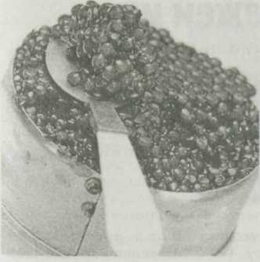
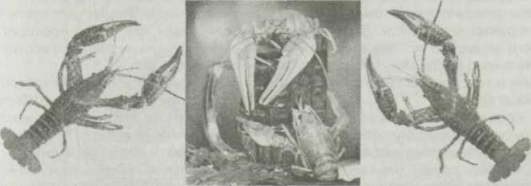

Делаем сами
 Икра соленая
Икра соленая
Чтобы отделить икру от пленки, нужно обдать ее кипящей соленой водой, а затем пропустить через пластмассовое сито. Размер ячеек сита должен быть чуть больше размера икринок. Пленка останется на сите, а икра станет зернистой. Опустить икру на 1 мин. в насыщенный горячий раствор соли и откинуть на дуршлаг. С этого момента икра готова. Если нужно заготовить ее для длительного хранения, то разложите икру в сухие стерилизованные банки, а сверху залейте топленым маслом. Хранить в прохладном месте.
Можно засолить икру и таким способом: приготовить насыщенный соленый раствор, чтобы опущенная в него среднего размера очищенная картофелина всплывала. Положить в раствор лавровый лист, перец горошком и вскипятить. Остудив, опустить очищенную от пленки икру и выдержать сутки. Затем воду слить, икру заправить растительным маслом и подать к столу.
Татьяна БОГДАН, п. Киевский Московской обл.
* * *
Сейчас в магазине можно купить непотрошеную горбушу и, если повезет, рыба окажется с икрой, которую можно засолить.
В 1 л воды растворить 1,5 ст.л. соли, нагреть до 70-80 град., опустить икру вместе с пленкой, дать постоять 10-15 мин., периодически помешивая. Затем на кастрюльку натянуть марлю с крупными ячейками и, понемногу выкладывая ложкой икру, осторожно протереть через марлю. Икру, которая отделилась от пленки,
сложить в приготовленную баночку, добавив немного растительного масла. Через час икра готова к употреблению. Получается не хуже магазинной. Таким же способом можно засолить икру щуки, сига.
Людмила КУНИНА, г. Челябинск.

Сырую икру, выпущенную из рыбы, выложить в миску, добавить соль, 2 яйца, перец, немного муки для вязкости и взбить в однородную массу. Смоченной в воде ложкой выложить массу в кипящее растительное масло и обжарить с обеих сторон, как оладьи. Можно подавать как в горячем, так и в холодном виде.
Алевтина БОНДАРЕНКО, с. Пологое Займище Астраханской обл.
Щучья икраНа 1,5 ст. икры — 1 ч.л. соли.
Икру очистить от пленок, ошпарить кипятком, откинуть на дуршлаг. Посолив, поставить на 10-12 часов в теплое место, затем разложить в баночки, залить растительным маслом. Хранить в холодильнике.
Галина ЗАЧЕСОВА, п/о В.Сяглово Калужской обл.
Блюда из свежей икры100 г щучьей икры, 2 ст.л. растительного масла, 1 луковица, соль — по вкусу.
Выпущенную из щуки икру выложить на дуршлаг, выстеленный марлей, вилкой удалить пленку, ошпарить икру крутым кипятком, непрерывно помешивая ее вилкой. Марлю с икрой вынуть из дуршлага, собрать в узелок и повесить над кастрюлей, чтобы хорошо стекла вода.
Обсушенную икру положить в салатник, добавить масло и измельченный лук, посолить и хорошо вымешать.
* * *
400 г свежей икры судака, 0,5 луковицы, 2 ст.л. растительного масла, уксус, соль, перец — по вкусу, 1-2 ст.л. мелко нарубленной зелени петрушки.
Икру освободить от пленки и ошпарить кипятком. Через 10 мин. воду слить и дать икре немного обсохнуть. Добавить масло, соль, перец, уксус и мелко нарубленный лук. Все хорошо перемешать и оставить на час. Перед подачей на стол посыпать измельченной зеленью петрушки.
Олег АНОСОВ, г.Воронеж.
Молоки соленой сельди в яйце150 г молок, 3 яйца, 10 г зелени, горчица — по вкусу.
Молоки промыть, снять пленку. Хорошо растереть с желтками вареных яиц и горчицей. Смесь положить в корзиночки из белка вареных яиц и посыпать зеленью.
Галина ВОЛНОВА, г.Мариинский Посад, Чувашия.
Раки в квасе10 раков, 1,5 ст. хлебного кваса, 1 ст. воды, соль — по вкусу. Вскипятить подсоленную смесь воды и кваса, опустить промытых живых раков и варить при кипении 10 мин. Подавать горячими вместе с бульоном.
Денис ДИМ УРИН, г. Красный Л уг, Украина.
